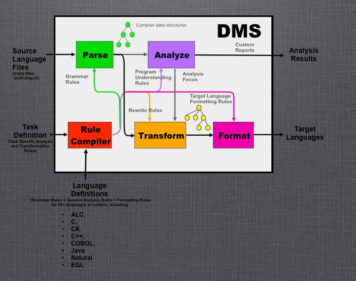

DMS® Software Reengineering Toolkit™
... is a sophisticated set of infrastructure and highly customizable tools for automating:
- source program analysis
- modification of source code
- generation of software
The purpose of DMS is to provide sufficient infrastructure so that a custom tool builder can spend her time working on the custom tool details, rather than trying to build the necessary infrastructure machinery from the ground floor up. This can save the tool builder literally years of engineering by leveraging the man-century already invested by SD. Sophisticated infrastructure enables the tool builder to produce more effective results than what could be obtained from a custom standalone tool.
The term "software" for DMS is very broad and covers any formal notation, including programming languages, markup languages, hardware description languages, design notations, data descriptions, and domain-specific languages. This toolkit is the first step towards the implementation of the Design Maintenance System®, an ambitious vision of a 21st Century software engineering environment that supports the incremental construction and maintenance of large application systems, driven by semantics and captured designs.
DMS: Generalized Compiler Infrastructure
A very simple model (see Figure below) of DMS is that of an extremely generalized compiler, having
- a parser (producing compiler-like data structures capturing code),
- a set of semantic analyzers,
including a variety of pattern matching (using surface syntax) engines - a set of compiler data structure modification engines,
including a source-to-source program transformation engine (using surface syntax) - and final output formatting components (converting compiler data structures back to valid source code rather than binary code),
DMS can be used "just" to construct analyzers that generate reports. Or, it can be used to find and fix coding and structural issues. using analyzer output (analysis focus arc) to locate issues, and choose/apply transformations to resolve them.
Unlike a conventional compiler, DMS can process thousands of files from multiple languages at the same moment, allowing analyses and/or consistent code changes across complex systems of files.
An interesting property is that DMS reads formal descriptions of languages, analyses and transforms. DMS is consequently used to support itself, including producing new language descriptions.
See a comparison of DMS to other well-known types of compiler technologies.
The Software Reengineering Toolkit can be used to implement a wide variety of program enhancing tools. A very simple, but detailed example, shows how DMS can be easily used to define and manipulate a notation system that is equivalent to standard algebra. A white paper on how DMS can be used to enhance software quality is available (PDF, 100Kb). Think of DMS as Life After Parsing.
Our CloneDR is an example of a DMS-enabled custom reengineering application. The CloneDR has a particular DMS configuration designed to find exact and almost-identical blocks of code ("clones") in large systems, and remove them by replacing them with invocations of abstractions (macros, procedures, etc.). The technology is generic enough so we have applied it to COBOL, C/C++, Java, Fortran 90, and to VHDL. You can download a demo COBOL clone detector/reporter.
DMS Capabilities
DMS provides a large set of robust, integrated facilities for building software analysis and modification tools, proven on dozens of real languages:
- Full UNICODE-based parser and lexer generation with automatic error recovery. Accepts/generates files encoded in UTF-8 and UTF-16, 7 bit ASCII (ISO-646-US), 8 bit ASCII (ISO-8859-1 thru -16), EBCDIC (CP-37, CP-500), a number of Microsoft code pages (CP-1250 thru -1258), and Japanese Shift-JIS (CP-932 and JIS-0208). Standard support is included for reading multiple source files to enable INCLUDE file management and construct suitable preprocessors. The parser technology is based on GLR, and can handle any context-free language, even with ambiguities (much stronger than YACC/LALR). (See details here.)
- Automatic construction of abstract (not concrete) syntax trees (non-value-carrying terminals and unit productions are suppressed; syntax-lists are converted into AST list nodes). Literal values (numbers, escaped strings) are converted to native, normalized binary values for fast internal manipulation. Source comments are captured and attached to AST nodes. (See details here.)
- Pretty-printer generation converts ASTs back to nicely formatted legal source file form, according to a specified layout information, including source comments. In fidelity-printing mode, comments, spacing and lexical formatting information of unchanged code is preserved. (See details here.) Customizing allows generation of source code HTML form, or even as obfuscated source text. Trees may be output directly in XML format.
- Multi-pass attribute-evaluator generation from grammar, to allow arbitrary analysis (including name/type analysis procedures) to be specified in terms of the concrete grammar provided. Attributes may be local or long-distance. (See details here.)
- Sophisticated symbol-table support facilities for global, local, inherited, overloaded and other language-dependent name lookup and namespace management rules. This handles even the complexity of C++14. (See details here.)
- Control-flow graph construction including traditional entry/exit/action/condition nodes, but also fork/join nodes to model parallelism and/or indeterminate order (e.g., C sequence points). There predefined analyzers for constructing (post) dominators, and inducing structured control-flow regions. Additional machinery can compute compilation-unit local and system/global call graphs.
- Data flow analysis framework, to allow data-flow analysis problems to be posed and answered, including predefined analyzers for constructing use-def and def-use chains. (See sample control and data flow graphs)
- Points-to analysis for computing local or global points-to data, tested on systems of 13+ million lines of code.
- Symbolic Range Analysis computing range constraints on program variables in terms of other variables. This is useful to detecting array-access errors, determining which switch case is selected, ... in conjunction with other analyses.
- Binary- (and Finite) Decision Diagrams are used to construct and combine symbolic boolean formulas (or formulas over exclusive sets of choices) efficiently. It is straightforward to convert an AST representing a boolean formula to a BDD, and vice-versa.
- Multiple domains (notations/languages) can be represented at the same time. This enables processing or generating systems composed of parts from more than one domain (COBOL and JCL, C and Makefiles, etc.), and/or translation from one domain language to another.
- Transforms and patterns can be written directly in surface-to-surface domain syntax form. Patterns can be matched against syntax trees and return bindings for parameter subtrees. Alternatively, procedural code can implement transforms, or refer to existing transforms and patterns to enable construction of very sophisticated transforms. (See details here.)
- A full Associative/Commutative rewrite engine that operates on trees and DAGs, which can be used to apply sets of transforms.
- A metaprogramming language, XCL, provides the ability to control the sequencing of the application of transforms and sets of transforms. (Future Release)
- An algebraic specification subsystem can be used to specify arbitrary algebras (this is just a DMS domain!). The axioms can be treated as a set of rewrite rules. (This allows one to code arbitrary simplification procedures. (We have done simplification on boolean equations that are essentially 1 million terms in size; we have also modeled optimization of transistor [not gates!] circuits this way).
A technical paper detailing these facilities was published at the 2004 International Conference of Software Engineering. You can get a paper reprint and the corresponding slides. To get a concrete feel for DMS, we provide an example of how aspects of DMS are specified for the Oberon language.
Industrial Scale
These foundations have been used for an amazing variety of industrial tasks, including quality analysis, restructuring, automated porting, pretty printing and highly optimized code generation.
DMS is designed to work on large scale source systems
- with up to several million lines of source code or specification
- across tens of thousands of source files
- having multiple languages at the same time
DMS is implemented using our parallel language, PARLANSE, to provide computational horsepower consistent with this scale. While DMS runs on a single processor system at unit speed, it also runs on symmetric multiple processor workstations with enhanced performance. As an example, the attribute evaluation process is automatically parallelized, and can often provide a linear speedup on an N-way SMP system.
DMS is hosted on Windows (any version) using Intel or AMD single or symmetric multiprocessing (SMP) hardware. Using Wine, DMS runs on Linux, Solaris and MAC OS X.
If you are still reading, you will probabably like this invited Google Tech Talk video on DMS.
Available Languages
While complex legacy grammars can be defined quickly to enable DMS to operate on source programs in those languages, SD already has language modules and grammars available for many languages.
Business Focus
We are primarily interested in training our customers to use DMS for their own purposes, whether that be for internal applications or external services. SD will provide expert advice and implementation support as desired by the customer.
While we can train interested customers to use DMS, for some customers this may not be appropriate. Semantic Designs will contract DMS-related service activities for customers.
Semantic Designs offers training classes on DMS. SD also offers a number of public tutorials about program transformation systems in general, including some discussion of DMS. Research licenses are also available.
Platform
DMS is designed to run on symmetric multiple processor x86 architectures.
The Intel logo is a registered trademark of Intel Corporation.